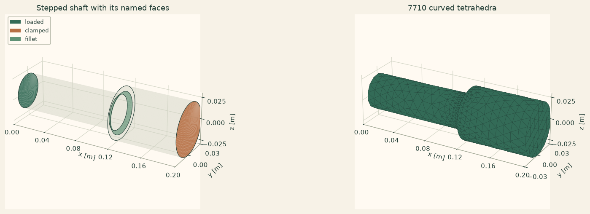

Docs › Examples › Non-proportional fatigue of a shaft shoulder
Fatigue · 3D
Non-proportional fatigue of a shaft shoulder
A stepped steel shaft carries a transverse force and a torque in five combinations, and the fatigue risk at the shoulder fillet is rated with three multiaxial criteria.
Run locally with OneSimulation. The example downloads are free. Running them requires an activated runtime. Runtime Alpha 0.2.1a7 · CPython 3.13 on macOS (Apple Silicon), Ubuntu 22.04 (x86-64), and Windows x64. Installation and activation · View pilot plans. Scope of the reference checks.

What it computes
OneSimulation reads the shaft from a STEP file, meshes it with curved quadratic tetrahedra refined on the fillet and solves a unit force and a unit torque in 3D linear elasticity; the stress history at the fillet root is their superposition, evaluated with the Findley and Matake critical-plane criteria over 4000 planes and with the Dang Van criterion on the shaken-down deviatoric path. The script that builds the STEP file comes with the notebook.
What it checks
Nominal stresses away from the shoulder match beam theory within 0.2 %; under pure torsion the fillet root gives Matake 97.46 and Dang Van 97.56 MPa against the shear amplitude 97.45 MPa and Findley 101.75 against 101.74 MPa; a steady torque leaves Dang Van unchanged (-0.1 %) while Findley rises by 16 %.
Geometry
The notebook starts at the import of the CAD file shaft_fillet_nonproportional_fatigue.step: STEP (AP242), readable by any CAD program, with the names of the faces that the boundary conditions use. Put it next to the notebook.

The geometry script
The script shaft_fillet_nonproportional_fatigue_geometry.py builds the geometry with the CAD objects of OneSimulation and writes the file. Change a dimension there, run it, and run the notebook again.
"""Geometry of the OneSimulation example "Non-proportional fatigue of a shaft shoulder".
Builds a stepped steel shaft with the CAD objects of OneSimulation: 40 mm diameter over the first
120 mm, 60 mm diameter over the last 80 mm, joined by a shoulder fillet of 4 mm radius; the axis is
x. The faces loaded (x = 0), clamped (x = 200 mm) and fillet are named and the part is written to
shaft_fillet_nonproportional_fatigue.step.
"""
import numpy as np
from onesim.cad.d3 import Cylinder
small, large, step, length, radius = 0.020, 0.030, 0.120, 0.200, 0.004
shaft = Cylinder(radius=small, length=step, axis=(1.0, 0.0, 0.0)) | Cylinder(
radius=large, length=length - step, origin=(step, 0.0, 0.0), axis=(1.0, 0.0, 0.0)
)
shaft = shaft.fillet(
radius,
edges=shaft.select(
edges=lambda edge: abs(np.asarray(edge.start)[0] - step) < 1e-9
and abs(np.linalg.norm(np.asarray(edge.start)[1:]) - small) < 1e-9
),
)
shaft = shaft.grouped(
loaded=shaft.select(faces=lambda face: abs(face.center[0]) < 1e-9),
clamped=shaft.select(faces=lambda face: abs(face.center[0] - length) < 1e-9),
fillet=shaft.select(faces=lambda face: face.kind not in ("plane", "cylinder")),
)
shaft.save("shaft_fillet_nonproportional_fatigue.step")The notebook
The complete notebook, cell by cell. Run it to produce the figures and the comparison printout.
Drive shafts carry bending from transverse forces and torsion from the transmitted torque. At a shoulder the fillet concentrates both. When the bending stress rotates with the shaft while the torque varies on its own, the principal directions at the fillet change during a cycle: the loading is non-proportional, and uniaxial fatigue data no longer apply directly. Three classical high-cycle criteria handle such stress histories:
| criterion | parameter | idea | |---|---|---| | Findley | \(\max_{\text{planes}}(\tau_a+k\,\sigma_{n,\max})\) | critical plane with the largest combination | | Matake | \(\tau_a+k\,\sigma_{n,\max}\) on the plane of largest \(\tau_a\) | critical plane of the largest shear amplitude | | Dang Van | \(\max_t\big(\tau_\text{meso}(t)+a\,p(t)\big)\) | grain-level shear after elastic shakedown plus hydrostatic stress |
Dang Van shifts the deviatoric stress path by the centre of its smallest enclosing hypersphere; the remaining Tresca stress is the mesoscopic shear. A constant mean shear stress therefore does not count in Dang Van, whereas it changes the normal stresses on the critical planes of Findley.
Setup. A steel shaft (\(E=210\) GPa, \(\nu=0.3\)) of 40 mm diameter over 120 mm and 60 mm diameter over 80 mm, with a 4 mm shoulder fillet, clamped at the thick end. The thin end carries a transverse force \(F(t)\) and a torque \(T(t)\) with amplitudes that give the nominal stresses \(\sigma_{b}=120\) MPa (bending at the shoulder) and \(\tau_{t}=80\) MPa (torsion) in the 40 mm section. \(k=a=0.3\) for all criteria. The shaft comes from the CAD file shaft_fillet_nonproportional_fatigue.step, written by shaft_fillet_nonproportional_fatigue_geometry.py with the CAD objects of OneSimulation.
| face | condition | |---|---| | clamped | fixed | | loaded | transverse traction \(F/A\) in \(-y\), or the torsional traction \(T r/J\) | | other faces | free |
| load case | \(F(t)/F_a\) | \(T(t)/T_a\) | |---|---|---| | bending | \(\sin\omega t\) | 0 | | torsion | 0 | \(\sin\omega t\) | | in phase | \(\sin\omega t\) | \(\sin\omega t\) | | out of phase | \(\sin\omega t\) | \(\cos\omega t\) | | bending with steady torque | \(\sin\omega t\) | 1 |
Reference. (1) In the 40 mm section away from the shoulder the stresses are those of beam theory, \(\sigma_{xx}=M(x)\,r/I\) and \(\tau=T\,r/J\). (2) Under pure alternating torsion the fillet root is in pure shear \(\tau_a\) in its surface plane, so Matake and Dang Van give \(\tau_a\) and Findley gives \(\tau_a\sqrt{1+k^2}\) (Socie and Marquis, Multiaxial Fatigue, SAE 2000). (3) Dang Van gives the same value with and without the steady torque.
import numpy as np
from onesim.cad.exchange import load
from onesim.materials import IsotropicSolid
from onesim.meshing import LocalRefinement, TetrahedralMesher
from onesim.numerics import Numerics
from onesim.numerics.fem import FiniteElement, Lagrange
from onesim.numerics.linear import SparseDirect
from onesim.physics.solid_mechanics import (
FindleyCriterion,
FixedDisplacement,
LinearElasticity,
Traction,
TractionFree,
critical_plane,
dang_van_parameter,
matake_parameter,
)
from onesim.simulation import Problem, Simulation
from onesim.visualization import plots, theme
theme.set()Geometry and mesh
load returns the shaft with its named faces; quadratic tetrahedra of 10 mm, refined to 1.6 mm on the fillet and bound to its curved surface.
shaft = load("shaft_fillet_nonproportional_fatigue.step")
faces = shaft.boundaries
small, step = 0.020, 0.120
mesh = TetrahedralMesher(
target_size=0.010,
geometry_order=2,
refinements=(LocalRefinement(region=faces.fillet, target_size=0.0016),),
).generate(shaft)
view = plots.Camera(elevation=25, azimuth=-60)
fig = plots.figure(1, 2, size=(15, 5.5))
plots.geometry(
shaft,
selection={
"loaded": faces.loaded,
"clamped": faces.clamped,
"fillet": faces.fillet,
},
labels=False,
camera=view,
title="Stepped shaft with its named faces",
ax=fig[0],
)
plots.mesh(
mesh,
groups=("all",),
legend=False,
camera=view,
title=f"{mesh.cell_count} curved tetrahedra",
ax=fig[1],
)
plots.show()Unit load cases
A transverse force of 1 kN and a torque of 100 N m, each solved once; any load history is a combination of the two stress fields.
steel = IsotropicSolid(
density=7850.0,
specific_heat_capacity=460.0,
thermal_conductivity=50.0,
youngs_modulus=210e9,
poisson_ratio=0.3,
thermal_expansion_coefficient=12e-6,
)
model = LinearElasticity(domain=shaft.volume, material=steel)
area, polar = np.pi * small**2, np.pi * small**4 / 2
unit = {
"force": (
1e3,
lambda x, y, z: np.column_stack((0 * x, np.full_like(x, -1e3 / area), 0 * x)),
),
"torque": (100.0, lambda x, y, z: np.column_stack((0 * x, -z, y)) * 100.0 / polar),
}
numerics = Numerics(
spatial=FiniteElement(element=Lagrange(order=2)), linear_solver=SparseDirect()
)
stress = {
name: Simulation(
problem=Problem(
name=f"Unit {name}",
geometry=shaft,
physics=(model,),
boundary_conditions=(
FixedDisplacement(
boundary=faces.clamped, physics=model, value=(0.0, 0.0, 0.0)
),
Traction(boundary=faces.loaded, physics=model, value=traction),
TractionFree(
boundary=faces.all - faces.clamped - faces.loaded, physics=model
),
),
),
mesh=mesh,
numerics=numerics,
).solve_stationary()
for name, (_, traction) in unit.items()
}
fields = {name: result.field(model.stress) for name, result in stress.items()}
mises = stress["force"].field(model.von_mises_stress)Stress history at the fillet root
The fillet is sampled for the largest von Mises stress of the bending case; the point is moved 10 µm towards the axis so that it lies inside the material. The load amplitudes follow from the nominal stresses; one cycle has 72 steps, and 4000 normals cover the half sphere of planes.
samples = mises.sample(along=faces.fillet, subdivisions=4)
hot = samples.positions[int(np.argmax(samples.values))]
hot = hot - 1e-5 * np.r_[0.0, hot[1:] / np.linalg.norm(hot[1:])]
tensor = lambda v: np.array(
[[v[0], v[3], v[5]], [v[3], v[1], v[4]], [v[5], v[4], v[2]]]
)
per_unit = {
name: tensor(np.asarray(field.evaluate(hot[None, :]))[0]) / unit[name][0]
for name, field in fields.items()
}
force_amplitude = 120e6 * np.pi * (2 * small) ** 3 / 32 / step
torque_amplitude = 80e6 * np.pi * (2 * small) ** 3 / 16
cycle = np.linspace(0.0, 2 * np.pi, 73)
combinations = {
"bending": (np.sin(cycle), 0 * cycle),
"torsion": (0 * cycle, np.sin(cycle)),
"in phase": (np.sin(cycle), np.sin(cycle)),
"out of phase": (np.sin(cycle), np.cos(cycle)),
"bending, steady torque": (np.sin(cycle), np.ones_like(cycle)),
}
history = {
name: force_amplitude * f[:, None, None] * per_unit["force"]
+ torque_amplitude * t[:, None, None] * per_unit["torque"]
for name, (f, t) in combinations.items()
}
count = np.arange(4000) + 0.5
normals = np.column_stack(
(
np.sqrt(1 - (count / 4000) ** 2) * np.cos(np.pi * (1 + 5**0.5) * count),
np.sqrt(1 - (count / 4000) ** 2) * np.sin(np.pi * (1 + 5**0.5) * count),
count / 4000,
)
)
k = 0.3
findley = {
name: critical_plane(h, normals, criterion=FindleyCriterion(k)).scores.max()
for name, h in history.items()
}
shear_plane = {
name: critical_plane(h, normals, criterion=FindleyCriterion(0.0))
for name, h in history.items()
}
peak_normal = {
name: critical_plane(
h, normals, criterion=lambda normal, shear: normal.max(axis=1)
).scores
for name, h in history.items()
}
matake = {
name: matake_parameter(
plane.scores[plane.index], peak_normal[name][plane.index], sensitivity=k
)
for name, plane in shear_plane.items()
}
dang_van = {
name: dang_van_parameter(h, sensitivity=k).value for name, h in history.items()
}Checks and results
Nominal stresses on the surface of the 40 mm section, the fillet root under pure torsion against the closed forms, and the three parameters for all load cases.
station = np.array([[0.060, small * (1 - 1e-4), 0.0]])
bending = np.asarray(fields["force"].evaluate(station[:1]))[0, 0]
twist = np.asarray(fields["torque"].evaluate(station))[0, 5]
print(
f"x = 60 mm, top fibre: σ_xx per kN {bending / 1e6:.3f} MPa (beam theory {1e3 * 0.060 * small / (np.pi * small**4 / 4) / 1e6:.3f}); "
f"τ_xz per 100 N m {abs(twist) / 1e6:.3f} MPa (beam theory {100.0 * small / polar / 1e6:.3f})"
)
print(
f"fillet root at x = {1e3 * hot[0]:.2f} mm, r = {1e3 * np.linalg.norm(hot[1:]):.2f} mm; stress concentration in bending "
f"{np.abs(np.linalg.eigvalsh(per_unit['force'])).max() * force_amplitude / 120e6:.3f}, in torsion "
f"{0.5 * np.ptp(np.linalg.eigvalsh(per_unit['torque'])) * torque_amplitude / 80e6:.3f}"
)
shear_amplitude = 0.5 * np.ptp(
np.linalg.eigvalsh(per_unit["torque"] * torque_amplitude)
)
print(
f"pure torsion at the root, τ_a = {shear_amplitude / 1e6:.2f} MPa: Matake {matake['torsion'] / 1e6:.2f}, Dang Van {dang_van['torsion'] / 1e6:.2f} "
f"(closed form {shear_amplitude / 1e6:.2f}); Findley {findley['torsion'] / 1e6:.2f} (closed form {shear_amplitude * np.sqrt(1 + k**2) / 1e6:.2f}) MPa"
)
print(
f"{'load case':>24s} {'Findley [MPa]':>14s} {'Matake [MPa]':>13s} {'Dang Van [MPa]':>15s}"
)
for name in history:
print(
f"{name:>24s} {findley[name] / 1e6:14.2f} {matake[name] / 1e6:13.2f} {dang_van[name] / 1e6:15.2f}"
)
print(
f"steady torque: Dang Van changes by {100 * (dang_van['bending, steady torque'] / dang_van['bending'] - 1):+.3f} %, "
f"Findley by {100 * (findley['bending, steady torque'] / findley['bending'] - 1):+.1f} %"
)Figure
Left the von Mises stress of the bending case on the shaft; right the three fatigue parameters for the five load cases. The out-of-phase combination is milder than the in-phase one for all three criteria, because the bending and torsion peaks do not meet; the steady torque leaves Dang Van unchanged but raises Findley.
fig = plots.figure(1, 2, size=(17, 6))
plots.surface(
mises,
component=lambda s, position: s * force_amplitude / unit["force"][0] / 1e6,
camera=view,
limits=(0, 200),
label="von Mises stress [MPa]",
title="Bending at the force amplitude",
ax=fig[0],
)
plots.bars(
list(history),
{
"Findley": [findley[n] / 1e6 for n in history],
"Matake": [matake[n] / 1e6 for n in history],
"Dang Van": [dang_van[n] / 1e6 for n in history],
},
ylabel="fatigue parameter [MPa]",
title="Fatigue parameters at the fillet root",
ax=fig[1],
)
plots.show()Going further
Compare the parameters with the torsional fatigue limit of the steel to obtain safety factors, enlarge the fillet radius and follow how the hot spot relaxes, or rotate the bending with the shaft to model a rotating-bending test.